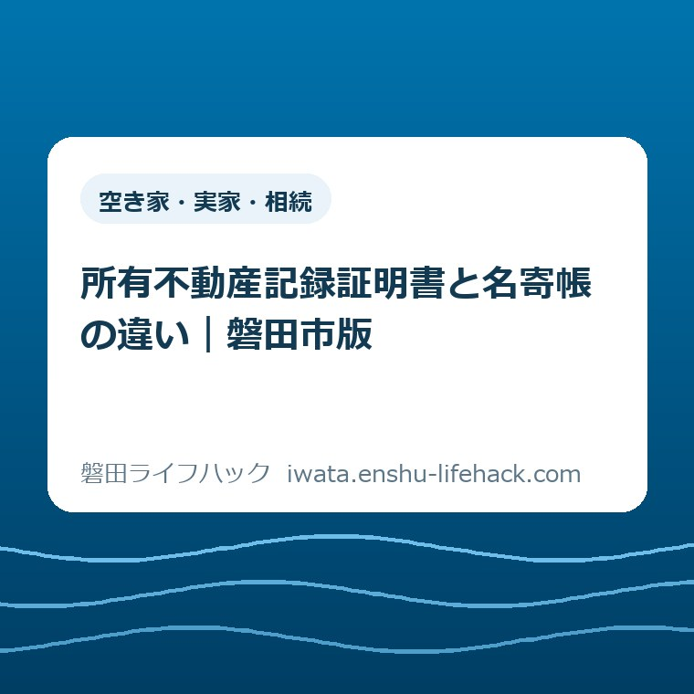

空き家・実家・相続
所有不動産記録証明書と名寄帳の違い｜磐田市版

この記事の要点
Q. 親が磐田市外にも不動産を持っていたかもしれません。名寄帳を取れば全部分かりますか？
A. 名寄帳は磐田市内の納税義務者別・年度別の資産一覧です。所有不動産記録証明書は、氏名・住所を条件に全国の登記済み不動産を検索します。どちらも漏れ得るため、親の過去の氏名・住所をそろえ、二つを重ねて確認してください。
導入——似た二つの一覧は、見ている台帳が違う
所有不動産記録証明書と名寄帳の違いは、対象地域だけではありません。所有不動産記録証明書は不動産登記の側から全国を検索し、磐田市の名寄帳兼課税台帳は固定資産税の側から市内の資産を年度別に確認します。名前は似ていますが、作成する機関も、検索の基準も、拾えない不動産も違います。
親が「県外にも土地があった気がする」と話していた。古い権利証はあるが、今も所有しているか分からない。納税通知書には磐田市の土地しか見当たらない。相続が始まると、ご家族は断片的な記憶と書類をつなぐことになります。
2026年2月2日、法務省の所有不動産記録証明制度が始まりました。これまで無かった全国単位の検索が可能になった点は大きな前進です。ただし、「全国」と「記録証明」という言葉だけで、親の不動産が一件残らず出ると受け取るのは危険です。
先に言い切ります。相続財産を漏らしたくないなら、所有不動産記録証明書か名寄帳かの二択にしないでください。二つは競合する書類ではなく、別の穴を埋める書類です。片方で見つからなかったことは、片方にも存在しないことの証明にはなりません。
この記事では、磐田市に住んでいた親の不動産を家族が調べる場面に絞ります。相続全体の入口は磐田市の相続手続きに分けてあります。ここでは、不動産の候補を作る順番と、二つの資料の限界を生活の言葉に直します。

先に比較——全国の登記検索と、磐田市内の課税資産一覧
所有不動産記録証明書は、登記官が請求書の検索条件を不動産登記システムへ入力し、所有権の登記名義人として記録された全国の不動産をリスト化する証明書です。名寄帳兼課税台帳は、磐田市が納税義務者ごとの土地・家屋を年度別にまとめる市税の資料です。
対象地域は、所有不動産記録証明書が全国、磐田市の名寄帳が磐田市内です。親が浜松市、袋井市、県外にも不動産を持っていた可能性があるなら、磐田市の名寄帳だけでは市外分を調べられません。
基準日は同じではありません。所有不動産記録証明書は請求時の検索結果を証明します。名寄帳は指定した年度の固定資産税の資料です。古い年度と新しい年度では、納税義務者や資産の記載が変わることがあります。
費用も大きく違います。所有不動産記録証明書は書面請求なら検索条件1件につき1通1,600円です。磐田市の名寄帳は納税義務者・年度別に300円で、4月1日から5月31日までの縦覧期間中は無料です。
| 比べる項目 | 所有不動産記録証明書 | 磐田市の名寄帳兼課税台帳 |
|---|---|---|
| 作成する機関 | 法務局 | 磐田市 |
| 見る記録 | 所有権の登記 | 固定資産税の課税台帳 |
| 地域 | 全国 | 磐田市内 |
| 時点 | 請求時の検索結果 | 指定した年度 |
| 主な費用 | 書面は検索条件1件・1通1,600円 | 納税義務者・年度別300円 |
表の右か左だけを選ぶ必要はありません。全国の所有権登記を探す書類と、磐田市内の固定資産税を確かめる書類を重ねることで、見つかった不動産と、なお確認が要る不動産を分けられます。
2026年2月2日に始まった所有不動産記録証明制度
法務省の「所有不動産記録証明制度について」によると、制度の施行日は2026年2月2日です。相続人が亡くなった方名義の不動産を把握しやすくし、相続登記の漏れを防ぐ目的で設けられました。2026年9月8日に制度ページと案内資料を確認しました。
請求できるのは、所有権の登記名義人と、その相続人などの一般承継人です。代理人による請求もできます。無関係な第三者が、氏名だけで他人の全国資産を調べる仕組みではありません。
書面請求は、法務局・地方法務局の本局、支局、出張所へ提出できます。郵送も選べます。オンライン請求も可能ですが、単純なウェブフォームではありません。申請用総合ソフト、電子署名、添付情報のオンライン提供が必要です。
相続人が請求する場合は、本人確認の資料に加え、登記名義人との相続関係を示す戸籍謄本や法定相続情報一覧図の写しなどが必要です。親の過去の氏名や住所も検索条件に加えるなら、そのつながりを示す除籍謄本や戸籍の附票なども用意します。
手数料は「一人につき一律」ではありません。検索条件1件につき、1通当たりで計算されます。書面請求は1,600円、オンライン請求の郵送交付は1,500円、オンライン請求の窓口交付は1,470円です。
法務省は、検索条件を4件指定して書面で1通ずつ請求する例を6,400円と示しています。親が転居を重ね、登記上の住所候補が四つあるなら、網を広げるほど費用も増えます。ここは「全国一括で1,600円」と読み違えやすい箇所です。
証明書に載る中心情報は、不動産の所在と不動産番号です。固定資産税の評価額や税額を全国一括で証明する書類ではありません。見つける役割と、価格や税を確かめる役割を分けてください。
交付までの日数は登記所ごとに違います。法務省は制度開始当初、混雑により2週間程度かかる場合があると案内しています。相続税の申告や遺産分割の日程がある家族は、請求先へ所要日数を確かめてください。
意外な事実——全国検索でも、見つからない不動産がある
所有不動産記録証明書は全国を対象にしますが、法務省自身が検索の網羅性には限界があると明記しています。全国を探せることと、全国の不動産を必ず一件残らず拾えることは、同じではありません。
第一の限界は、検索対象が所有権の登記をされた不動産に限られることです。土地や建物の表示に関する登記だけで、所有権の登記がない不動産は対象外です。未登記建物も、この証明書だけでは拾えません。
第二の限界は、登記簿がコンピュータ化されていない不動産が検索結果に出ないことです。検索時点で審査中の登記申請があり、まだ登記へ反映されていない情報も証明書には含まれません。
第三の限界は、氏名と住所を使う検索です。登記簿上の氏名・住所と、請求書へ書いた検索条件が違えば、抽出されない場合があります。婚姻前の姓、旧字体、住居表示前の住所、何度も前の住所が手掛かりになります。
システムは、氏名の前方一致と住所の市区町村一致、または住所末尾5文字の一致などで候補を探します。異体字を一定の規則で置き換えて検索する仕組みもあります。それでも、全ての表記揺れを解消できるわけではありません。
該当する不動産が見つからなければ、「該当不動産がない」旨の証明が交付されます。その場合も手数料は戻りません。ゼロ件という結果は、指定した条件で該当が無かった証明であり、親が不動産を一度も持っていなかったという無条件の証明ではありません。
同名の別人が所有する不動産が候補として抽出される可能性も法務省は示しています。証明書は財産目録の完成品ではなく、登記事項証明書を取り、住所や持分、取得経緯を個別に確かめるための入口として扱うのが安全です。

磐田市の名寄帳は、納税義務者と年度で見る
磐田市の「固定資産税に関する証明および閲覧」は、名寄帳兼課税台帳を「納税義務者ごとの資産（土地・家屋）の一覧」と案内しています。課税明細書としても使える、市税側の資料です。ページ更新日は2026年4月1日です。
2026年度の名寄帳兼課税台帳は2026年4月1日に発行が始まり、証明内容は2026年1月1日時点です。請求した日のリアルタイム一覧ではありません。相続の前後に売買や取り壊しがあった場合は、基準日を置いて読みます。
磐田市が相続時の提出書類を案内する資料では、名寄帳兼課税台帳に「家屋番号が書かれていない未登記家屋」が載る場合も示されています。所有権登記だけを検索する所有不動産記録証明書では拾えない家屋を、市の税資料から見つけられる可能性があります。
請求できるのは、本人、納税義務者と同一世帯の親族、相続人、委任を受けた人です。相続人は相続関係を確認できる書類が必要です。代理人は原則として委任状を提出します。
手数料は、納税義務者・年度別に300円です。縦覧期間の4月1日から5月31日までは無料です。投稿日である2026年9月8日は無料期間外なので、通常の300円で考えます。年度を二つ指定すれば、年度ごとの扱いを市民税課へ確かめる必要があります。
取扱窓口は、磐田市国府台3番地1の本庁舎1階にある市民税課と、各支所市民生活グループです。郵便請求もできます。郵送では申請書、手数料分の定額小為替、返信用封筒、本人確認書類などをそろえます。
名寄帳の長所は、磐田市内の土地・家屋を固定資産税のまとまりで見られることです。一方、磐田市外にある資産は対象外です。親が袋井市や浜松市にも土地を持っていたなら、それぞれの自治体資料か全国の登記検索が要ります。
名寄帳の納税義務者と、登記簿の所有名義が必ず同じとは限りません。相続後に登記が終わっていない、共有名義がある、納税の代表者が設定されているといった個別事情があります。名寄帳だけを見て、法的な所有者を確定しないでください。
相続後の納税通知書や代表者の扱いは、磐田市の固定資産税（相続後の手続き）で確認できます。税の届け出と相続登記は別の手続きです。どちらか一方を済ませても、もう一方が自動で終わるとは限りません。
家族の順番——最初に集めるのは、証明書より検索条件
親が市外にも不動産を持っていた可能性がある家族は、請求書を書く前に検索条件を集めます。現在の氏名と住所だけでなく、婚姻前の氏名、以前の住所、住居表示変更前の表記を一枚へ並べます。
手掛かりになるのは、戸籍の附票、住民票の除票、除籍謄本、古い権利証、登記識別情報通知、固定資産税の納税通知書、通帳の税金引き落としです。書類の表記は家族の記憶より強い検索材料になります。
磐田市内については、名寄帳で納税義務者ごとの土地・家屋を確認します。市外の可能性が一つでも残るなら、過去の氏名・住所を必要な範囲で所有不動産記録証明書の検索条件へ加えます。費用が条件数に比例するため、むやみに候補を増やすのではなく、資料で裏付けます。
二つの一覧で所在地が見つかったら、地番と家屋番号を確かめ、個別の登記事項証明書へ進みます。共有持分、抵当権、現在の名義は物件ごとに確認します。現地へ行けるなら、建物が残っているか、住所と地番が対応するかも見ます。
家族内では、書類を集める人、法務局へ請求する人、市民税課へ連絡する人を決めます。同じ戸籍を別々に取り、同じ窓口へ三人が電話すると、費用も説明も重なります。一枚の一覧に「未確認」「請求中」「確認済み」を記録してください。
今日できる一歩は、親の過去の氏名・住所を一枚へ書くことです。売るか残すかを決める必要はありません。検索条件が一つ増えれば、半年後にどの選択をしても使える判断材料になります。
見つけた後は、家の管理と相続を別の段取りにする
不動産が見つかった時点では、財産調査の入口に立っただけです。相続登記、固定資産税、現地管理、家財整理、売却や活用は、それぞれ確認先と期限が違います。一気に一つの結論へ押し込まないでください。
不動産を見つけても遺産分割が期限までにまとまるとは限らないため、相続登記と相続人申告登記の違い｜磐田市で、それぞれ何ができ、何が終わらないのかを分けて確認してください。
空き家を売るか活用するか迷うなら、磐田市の空き家バンクと空き家おこしプロジェクトの違いを先に読み、所有者向けと協定事業者向けの入口を分けてください。名義の確認は、どちらへ進む場合にも先に要ります。
実家の家財が残っていても、財産調査と片付けを同じ日に終わらせる必要はありません。磐田市の粗大ごみと実家じまいの出し方の違いにある通り、一度に出る大量ごみは通常の戸別収集だけでは片付きません。
見つかった家が空き家で、台風や地震の被害を受けているなら、修理や片付けより写真と申請期限を先に確認します。磐田市の空き家と被災証明書では、災害発生日から6か月という期限を整理しています。
「見つけたから、すぐ売る」でも、「思い出があるから、そのまま」でもありません。雨漏り、草木、近隣への影響、保険、鍵の所在を確認し、保有中の負担を数字にしてから家族で選びます。
相続登記や相続税の個別判断は、資料だけで断定できません。司法書士、税理士、法務局、市民税課へ相談する範囲を分けてください。不動産会社が登記や税務の最終判断を代わりにすることもできません。
評価——良い点を先に、注文したい点を後に
所有不動産記録証明制度の良い点は、自治体を一つずつ推測して名寄帳を請求する前に、全国の所有権登記を一つの制度で検索できることです。親が市外へ転勤していた家族には、2026年2月2日まで無かった入口ができました。
二つ目の良い点は、全国の法務局・地方法務局で書面請求でき、郵送とオンラインも用意されたことです。不動産所在地を管轄する登記所へ家族が一件ずつ出向く必要はありません。
三つ目の良い点は、該当不動産が無い場合も検索結果として証明されることです。検索条件と日付を家族で共有すれば、「誰が、どの氏名と住所で、いつ調べたか」を記録できます。
その上で、注文したい点があります。「所有不動産記録証明書」という名称からは、持っている不動産の完全な一覧に聞こえます。実際は検索条件付きで、未登記や非コンピュータ化の登記簿は対象外です。制度案内の最初に、この限界を同じ大きさで見せてほしいと私は考えます。
二つ目の注文したい点は、手数料が検索条件ごとに増える仕組みの伝わりにくさです。1,600円という数字だけを覚え、窓口で旧住所を四つ挙げて6,400円と知れば、ご家族は戸惑います。検索条件と費用の対応を、請求前に試算できる表示が欲しいところです。
三つ目の注文したい点は、オンライン請求の入口です。申請用総合ソフトと電子署名が必要なので、普段オンライン登記を使わない家族には軽い手続きではありません。書面、郵送、オンラインの必要物を一画面で比べられる案内があると、方法を選びやすくなります。
磐田市の名寄帳には、300円で市内の課税資料を確認できる分かりやすさがあります。国府台の本庁舎だけでなく各支所でも扱うため、市内で動く家族には現実的です。全国検索と市の資料を上下に置かず、役割の違う入口として案内するのがよいと考えます。
大石の視点——一枚取って安心する方が怖い
ここからは公表資料の説明ではなく、大石浩之（磐田市／不動産業）としての意見です。体験台帳にない相談場面を実話のようには書きません。制度と費用を照らした上で、家族の段取りをどう置くかを述べます。
正直に言います。名寄帳一枚を取って「これで全部分かった」と安心する方が怖い。所有不動産記録証明書を取って「全国検索だから完璧だ」と安心するのも同じです。二枚の名前より、どの記録を、どの条件で見たかを家族が説明できる状態の方が強い。
私には迷いもあります。市外の不動産があるか分からない全ての家族へ、検索条件ごとに費用がかかる全国検索を最初から勧めるべきか。可能性が薄く、納税通知書と権利証がそろう家なら、市の名寄帳と手元資料から始める方が家計に合う場合もあります。
それでも、親が転居を重ねた、県外の土地を話していた、通帳に別の自治体への納付がある。その手掛かりが一つあれば、全国検索を省く理由にはしません。後で見つかった土地の相続登記をやり直す手間は、今の1,600円より重くなることがあります。
私が残したいのは、「まだ売らない自由」です。財産が何件あるか分からないまま、目の前の実家だけを売る判断は急がない。今日決めるのは売却ではなく、親の過去の氏名・住所をそろえることです。
対案・結論——二択をやめ、二枚を重ねる
相続不動産の調査では、磐田市の名寄帳で市内の固定資産税の一覧を確認し、所有不動産記録証明書で全国の所有権登記を検索します。どちらも完全ではないため、過去の氏名・住所、手元書類、個別の登記事項証明書、現地確認をつないでください。
費用を抑えるなら、やみくもに検索条件を増やさず、戸籍の附票や古い権利証で住所候補を絞ります。無料期間だから名寄帳を取る、という日程だけでなく、必要な年度と納税義務者を市民税課へ先に伝えます。
- 親の現在・過去の氏名と住所を、戸籍の附票、除籍謄本、古い権利証から一枚へ集める。
- 磐田市の名寄帳兼課税台帳を請求し、市内の土地・家屋を年度別に確認する。
- 市外にも不動産がある手掛かりがあれば、裏付けた氏名・住所を検索条件にして所有不動産記録証明書を請求する。
- 二つの一覧に出た所在地ごとに、登記事項証明書、納税通知書、現地を照合する。
- 不明点を分け、市民税課、法務局、司法書士、税理士へ確認してから遺産分割や管理の判断へ進む。
最初の一歩は、証明書の請求ではなく、親の住所の履歴を家族で共有することです。書類が足りなければ、何が無いかを一行で残します。調査の抜けは、分からない箇所が見えないときに起きます。
制度の対象、必要書類、検索条件、手数料は個別事情で変わります。所有不動産記録証明書は法務省と請求先の法務局、名寄帳は磐田市公式ページと市民税課（0538-37-3767）で、2026年9月8日以後の最新案内を確かめてください。
まとめ——全国と磐田市内を、別の目で確かめる
所有不動産記録証明書は、2026年2月2日に始まった全国の登記検索です。所有権登記が対象で、氏名・住所の検索条件、未登記、非コンピュータ化などによる限界があります。書面手数料は検索条件1件・1通につき1,600円です。
磐田市の名寄帳兼課税台帳は、市内の納税義務者ごとの土地・家屋を年度別に見る資料です。手数料は納税義務者・年度別300円で、4月1日から5月31日は無料です。市外の資産は確認できません。
二枚を重ねても、調査が自動で完成するわけではありません。今日、親の過去の氏名・住所を一枚にしてください。家の処分はまだ決めなくてよい。確認材料を増やしたことが、今日の成果です。
- 所有不動産記録証明書は全国の所有権登記、磐田市の名寄帳は市内の固定資産税を基準にする。
- 全国検索にも漏れがある。過去の氏名・住所を検索条件に加え、未登記などは別に確認する。
- 名寄帳か全国検索かの二択にせず、二つの一覧を個別の登記事項証明書と現地確認へつなぐ。
よくある質問
所有不動産記録証明書と磐田市の名寄帳について、相続するご家族が迷いやすい三点を、制度の対象範囲から答えます。
所有不動産記録証明書なら、全国の不動産を漏れなく探せますか。
漏れなく探せるとは断定できません。所有権の登記がある不動産だけが対象で、未登記や登記簿がコンピュータ化されていない不動産は検索されません。登記上の氏名・住所と検索条件が合わない場合も漏れ得ます。親の過去の氏名・住所を戸籍の附票などで確かめて請求してください。
磐田市の名寄帳だけで、相続する不動産を確認できますか。
名寄帳兼課税台帳は、磐田市内にある納税義務者ごとの土地・家屋を年度別に確認する資料です。磐田市外の資産は載りません。登記名義と固定資産税の納税義務者が同じとは限らないため、所有不動産記録証明書や個別の登記事項証明書と重ねて確認してください。
相続人は、名寄帳と所有不動産記録証明書のどちらを先に取ればよいですか。
親の納税通知書、権利証、戸籍の附票を先に集めます。磐田市内の資産は名寄帳で確認し、市外にも不動産がある可能性があれば、過去の氏名・住所を検索条件に加えて所有不動産記録証明書を請求します。順序より、二つの資料の対象範囲を混同しないことが肝心です。
参考にした公式情報
- 所有不動産記録証明制度について／法務省（2026年9月8日確認）
- 固定資産税に関する証明および閲覧／磐田市（2026年9月8日確認・ページ更新日2026年4月1日）
- 令和8年度税証明発行開始日のご案内／磐田市（2026年9月8日確認・ページ更新日2026年5月12日）
- 相続人代表者届出書兼現所有者申告書の提出書類確認フローチャート／磐田市（2026年9月8日確認）
- 固定資産課税台帳、土地・家屋価格等縦覧帳簿の縦覧／磐田市（2026年9月8日確認・ページ更新日2025年3月26日）

最終確認日：2026-09-08 ／ 本記事は公表情報と執筆者の見解を分けて記載しています。制度の対象、請求できる方、必要書類、検索条件、手数料、名寄帳の年度、登記・税務上の判断は個別条件で変わります。最新情報は法務省、請求先の法務局、磐田市公式ページ、市民税課でご確認ください。